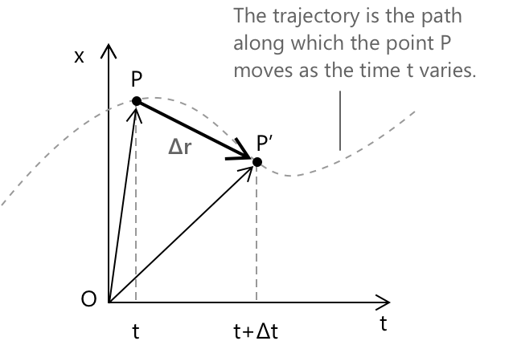

Рівномірний прямолінійний рух: швидкість
Вступ
Кінематика — це розділ механіки, що вивчає рух тіл, описуючи їхнє положення, швидкість та прискорення з часом. Перш ніж перейти до детального пояснення цих явищ, необхідно розглянути деякі ключові поняття.
- Матеріальна точка — це ідеалізований об'єкт, розмір якого вважається незначним порівняно з відстанями, що задіяні в його русі.
- Траєкторія — це лінія, яку описує матеріальна точка під час свого руху в просторі.
- Рух називається прямолінійним, якщо його траєкторія лежить на прямій лінії.
Якщо матеріальна точка рухається по прямій лінії з постійною швидкістю, тобто пройдені відстані пропорційні часовим проміжкам, такий рух називається рівномірним прямолінійним рухом.
Швидкість
Розглянемо дві точки, \( x_1 \) та \( x_2 \), що представляють положення \( P \) точки у два послідовні моменти часу, \( t_1 \) та \( t_2 \), відповідно.
Ми можемо виразити наступний зв'язок:
\[ \frac{x_2 – x_1}{t_2 – t_1} = v \]
Цей зв'язок показує, що пройдена відстань пропорційна часу, що минув, і це відношення залишається постійним, що дорівнює величині \( v \). Миттева скалярна швидкість визначається як границя цього відношення при тому, що часовий проміжок наближається до нуля:
\[ v_s = \lim_{\Delta t \to 0} \frac{\Delta x}{\Delta t} = \lim_{\Delta t \to 0} \frac{x(t + \Delta t) - x(t)}{\Delta t} \]
де \( v \) представляє миттєву швидкість, \( \Delta x \) — переміщення, а \( \Delta t \) — часовий проміжок. Отже, миттєва скалярна швидкість задається похідною \(x = x(t)\) по часу.
Тепер уявімо, що положення \( P \) точки в часі \( t \) визначається вектором переміщення \( \vec{r} \). Переміщення від \( P \) до \( P’ \) відбувається за часовий проміжок \( \Delta t \) і представляється вектором \( \Delta \vec{r} \). Маємо:
\[ \lim_{\Delta t \to 0} \frac{\Delta \mathbf{r}}{\Delta t} = \frac{d\mathbf{r}}{dt} = \mathbf{v} \]

Таким чином, ми можемо визначити вектор швидкості як:
\[ \mathbf{v} = \frac{dx}{dt} = \mathbf{i} \frac{dx(t)}{dt} \]
де \(\mathbf{i}\) представляє спрямований та орієнтований вектор. Вектор швидкості є дотичним до траєкторії в кожній точці, орієнтований за напрямком руху і має модуль, що дорівнює скалярній швидкості.
- При рівномірному прямолінійному русі вектор швидкості залишається постійним.
- При рівномірному прямолінійному русі рівняння положення траєкторії від часу є прямою, що означає, що положення змінюється лінійно з часом.
Швидкість вимірюється в одиницях довжини, помножених на час у степені \(-1\), і її стандартною одиницею є метри за секунду \((\text{ms}^{-1})\).
Приклад
Уявімо автомобіль, що рухається по прямій дорозі з постійною швидкістю \( v = 20\ \mathrm{m/s} \). Оскільки швидкість є постійною, відстань, яку проїхав автомобіль, прямо пропорційна часу, що минув. Положення \( x(t) \) автомобіля в будь-який момент часу \( t \) можна виразити як:
\[ x(t) = x_0 + v t \]
де:
- \( x_0 \) — початкове положення (при \( t = 0 \)).
- \( v \) — постійна швидкість.
- \( t \) — час, що минув.
Це означає, що за кожну секунду, що минає, автомобіль просувається рівно на 20 метрів вперед, не прискорюючись і не сповільнюючись. Підсумуємо дані в таблиці:
\[ \begin{array}{c|c} \text{Час } (\mathrm{s}) & \text{Положення } (\mathrm{m}) \\ \hline 0 & 0 \\ 1 & 20 \\ 2 & 40 \\ 3 & 60 \\ 4 & 80 \\ \vdots & \vdots \end{array} \]
Глосарій
-
Кінематика: розділ фізики, що вивчає рух тіл, описуючи їхнє положення, швидкість та прискорення з часом.
-
Матеріальна точка: ідеалізований об'єкт, розмір якого вважається мізерним порівняно з відстанями, що задіяні в його русі.
-
Траекторія: лінія, яку описує матеріальна точка під час свого руху в просторі.
-
Рівномірний прямолінійний рух: рух, траекторія якого лежить на прямій лінії.
-
Рівномірний прямолінійний рух: рух по прямій лінії з постійною швидкістю, де пройдені відстані пропорційні інтервалам часу.
-
Скалярна швидкість: границя відношення переміщення до інтервалу часу, коли інтервал часу наближається до нуля; модуль вектора швидкості.
-
Вектор швидкості: швидкість зміни вектора переміщення відносно часу; вектор, що є дотичним до траекторії, спрямований у бік руху, з модулем, що дорівнює скалярній швидкості.
Що таке швидкість
- Швидкість описує, як швидко і в якому напрямку рухається об'єкт.
- Скалярна швидкість відноситься до абсолютного значення швидкості, представляючи лише швидкість об'єкта без урахування напрямку.
- Векторна швидкість — це швидкість зміни положення відносно часу, що виражається як вектор, дотичний до траекторії та спрямований у бік руху.